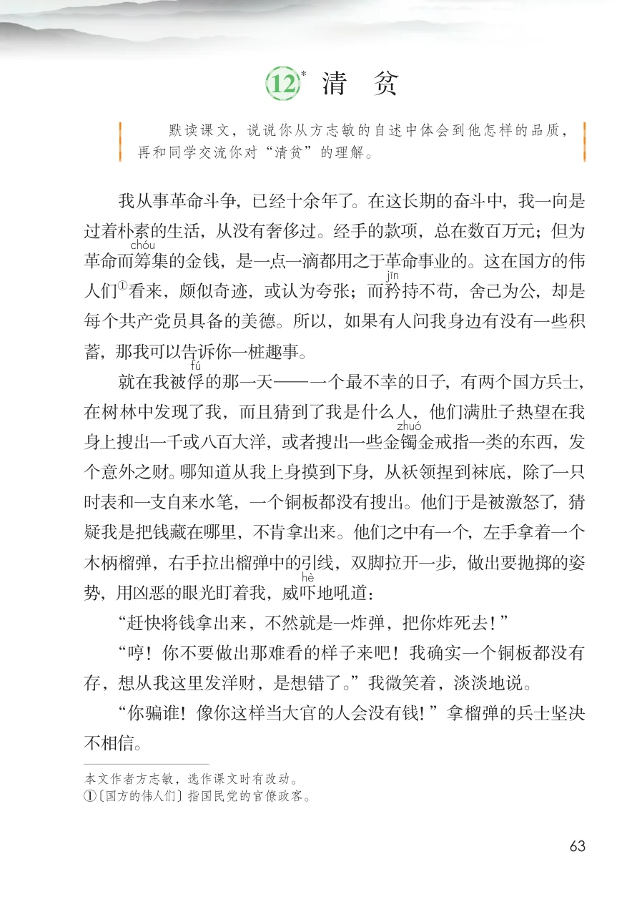
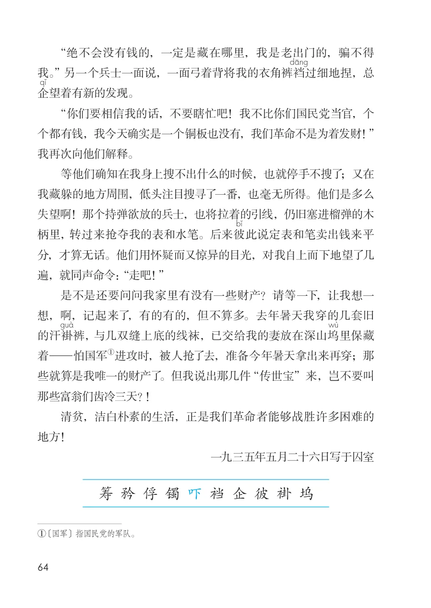

展开章节菜单
*12 清 贫
默读课文，说说你从方志敏的自述中体会到他怎样的品质，再和同学交流你对“清贫”的理解。
我从事革命斗争，已经十余年了。在这长期的奋斗中，我一向是
过着朴素的生活，从没有奢侈过。经手的款项，总在数百万元；但为
革命而筹
集的金钱，是一点一滴都用之于革命事业的。这在国方的伟
人们
持不苟，舍己为公，却是
每个共产党员具备的美德。所以，如果有人问我身边有没有一些积
蓄，那我可以告诉你一桩趣事。
的那一天—一个最不幸的日子，有两个国方兵士，
在树林中发现了我，而且猜到了我是什么人，他们满肚子热望在我
身上搜出一千或八百大洋，或者搜出一些金镯
金戒指一类的东西，发
个意外之财。哪知道从我上身摸到下身，从袄领捏到袜底，除了一只
时表和一支自来水笔，一个铜板都没有搜出。他们于是被激怒了，猜
疑我是把钱藏在哪里，不肯拿出来。他们之中有一个，左手拿着一个
木柄榴弹，右手拉出榴弹中的引线，双脚拉开一步，做出要抛掷的姿
势，用凶恶的眼光盯着我，威吓
地吼道：
“赶快将钱拿出来，不然就是一炸弹，把你炸死去！”
“哼！你不要做出那难看的样子来吧！我确实一个铜板都没有
存，想从我这里发洋财，是想错了。”我微笑着，淡淡地说。
“你骗谁！像你这样当大官的人会没有钱！”拿榴弹的兵士坚决
不相信。
① 〔国方的伟人们〕指国民党的官僚政客。
查看教材原页（保留全部图片、注音与原始排版）

“绝不会没有钱的，一定是藏在哪里，我是老出门的，骗不得我。” 另一个兵士一面说，一面弓着背将我的衣角裤裆
过细地捏，总企望着有新的发现。
“你们要相信我的话，不要瞎忙吧！我不比你们国民党当官，个个都有钱，我今天确实是一个铜板也没有，我们革命不是为着发财！”我再次向他们解释。
等他们确知在我身上搜不出什么的时候，也就停手不搜了；又在我藏躲的地方周围，低头注目搜寻了一番，也毫无所得。他们是多么失望啊！那个持弹欲放的兵士，也将拉着的引线，仍旧塞进榴弹的木柄里， 转过来抢夺我的表和水笔。后来彼分，才算无话。他们用怀疑而又惊异的目光，对我自上而下地望了几遍，就同声命令：“走吧！”
是不是还要问问我家里有没有一些财产？请等一下，让我想一想，啊，记起来了，有的有的，但不算多。去年暑天我穿的几套旧
裤， 与几双缝上底的线袜，已交给我的妻放在深山坞
些就算是我唯一的财产了。但我说出那几件“传世宝”来，岂不要叫那些富翁们齿冷三天？！
清贫，洁白朴素的生活，正是我们革命者能够战胜许多困难的地方！
查看教材原页（保留全部图片、注音与原始排版）
